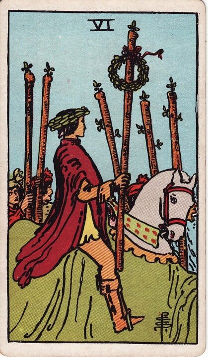

Minor Arcana · Suit of Wands
Six of Wands Tarot Card Meaning
The Six of Wands is the victory lap - recognition, public success, and earned confidence. Want to know what it means in your spread? Every reader on our line is hand-vetted - connect in under 60 seconds, $1 for your first minute, hang up anytime.
- Hand-vetted readers
- Available 24/7
- Hang up anytime

Six of Wands - What It Shows
A rider on a white horse moves through a crowd, a laurel wreath on his head and on his raised wand. People walk alongside, lifting their wands in support. This is the parade after the win. Where the Five was a chaotic scrum, the Six is the figure who came through it and is now being publicly acknowledged for it.
Six of Wands Upright Meaning
Upright, the Six of Wands is victory and recognition. You've done the work, won the contest, and others can see it. It's success that's witnessed - applause, reward, a confidence boost - and it encourages you to own the win rather than shrink from it.
Six of Wands Reversed Meaning
Reversed, the recognition is missing or delayed. Work that goes unseen, a win that didn't land, a fall from favour, or success curdled into ego. It can also mean you're seeking validation that hasn't come - or shouldn't be the goal.
Six of Wands in Love & Relationships
In love, the Six of Wands is a relationship to feel proud of, a confident reconciliation, being chosen, or a bold move that succeeds. Example: a caller nervous about confessing feelings drew the Six of Wands; the read leaned encouraging - the move is likely to be well received, and confidence works in their favour here.
Six of Wands in Career & Money
For work it's promotion, public recognition, winning a pitch, or a visible success. Example: someone awaiting a decision after a strong project pulled this card; the message was that the recognition is coming and to present the win with earned confidence rather than downplay it.
Six of Wands as Advice
As advice: own your success and let it be seen. Step into the recognition, lead with confidence, and don't sabotage a win with false modesty - or inflate it with ego.
What People Ask About the Six of Wands
Common questions readers hear about this card:
"Does it mean my move will be accepted?"
Often yes - it's a card of being well received and chosen.
"Is it a reconciliation card?"
It can be - a confident, welcomed return, especially with supportive cards.
"Six of Wands as feelings?"
Pride, admiration, 'I'm proud to be with you' or being looked up to.
"Does it guarantee the win?"
It strongly favours it, but position and surrounding cards still matter.
Six of Wands - Yes or No?
Upright: a strong yes - success and recognition are indicated. Reversed: "not yet," or the win is delayed or unacknowledged.
Six of Wands Reversed in Love & Career
Reversed, the Six of Wands is worth splitting by area. In love, it can be a confession or move that isn't met the way you hoped, a relationship you're privately proud of but that lacks real recognition, or ego getting in the way of connection - needing to be "right" or admired more than close. It can also be a reconciliation that stalls. In career, reversed it's work going unseen, a delayed promotion, a win that doesn't land, a fall from favour, or success that's curdled into arrogance. The reversed Six often asks whether you're chasing genuine achievement or just applause. A live reader can tell you whether the recognition is delayed, denied, or simply the wrong goal.
Six of Wands Timing in a Reading
Timing is the least precise thing tarot does, so treat this as a lean, not a guarantee. The Six of Wands is a fire-suit result card, so it usually reads as soon - a win, decision, or announcement within days to a few weeks. It often answers "when will I hear back?" with "shortly, and favourably." Reversed, the recognition is delayed or doesn't arrive on the timeline you hoped. A live reader narrows this from the full spread far better than the card alone.
Six of Wands Card Combinations
Context changes everything - a few pairings readers see often:
Six of Wands + The Chariot
A decisive, driven victory - willpower turned into a public win.
Six of Wands + Five of Wands
Winning the competition you've been fighting through.
Six of Wands + The Tower (rev)
Recovering reputation and standing after a setback.
Six of Wands in a Tarot Reading
A meanings page is the map; a live reading is the territory. The Six of Wands shifts with its position and the cards around it - which is what a hand-vetted reader interprets for your question. See the full Suit of Wands, all 56 cards on the Minor Arcana hub, or start a phone tarot reading.
← Five of Wands · Next: Seven of Wands →
What Does the Six of Wands Mean for You?
A meanings list is the map; a live reading is the territory. We'll connect you with the right hand-vetted tarot reader in under 60 seconds. $1/min first call · 15 minutes for $10 · hang up anytime · 100% satisfaction promise.
Call (888) 920-6662 NowSix of Wands - Frequently Asked Questions
What does the Six of Wands mean?
Victory, recognition, and public success - the witnessed win after struggle.
What does it mean reversed?
A delayed win, lack of recognition, a fall from favour, or ego.
What does the Six of Wands mean in love?
A relationship to be proud of, a welcomed move, or being chosen.
Is it a yes or no card?
Upright, a strong yes - success and recognition are coming.
How much does a reading cost?
First-time callers pay $1/min, or 15 minutes for $10, and you can hang up anytime.
Get Your Tarot Reading Now
Connected to a hand-vetted reader in under 60 seconds, the cards pulled on your real question, and you hang up with clarity.
Call (888) 920-6662